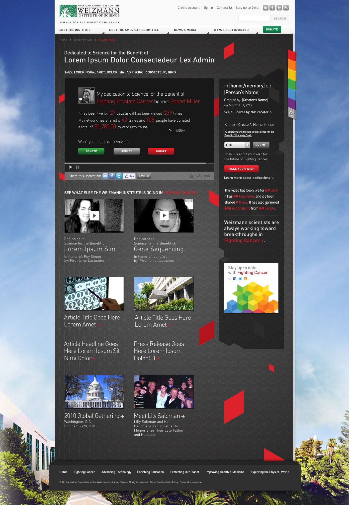

Though relatively unknown in the US, the Weizmann Institute of Science in Israel is responsible for some of the most noteworthy scientific breakthroughs of the last half-century. Their research focuses on six key areas of study: Fighting Cancer, Advancing Technology, Enriching Education, Protecting Our Planet, Improving Health and Medicine, and Exploring the Physical World.
The American Committee for the Weizmann Institute of Science is the US-based fundraising and marketing arm of the Institute, tasked with raising both awareness and money to fund research. While historically a major gifts organization (think checks with lots of zeroes), ACWIS found itself losing momentum as a new generation of donors struggled to relate to the science pursued at the institute.
Introducing Tomorrow Lab
Tomorrow Lab is a product/platform designed to make the deep science and research at the Weizmann Institute both relatable and sharable by allowing visitors to make personalized dedications in support of a specific area of research. Each dedication lives as a stand-alone crowd-funding platform that the creator can share with family, friends and followers to encourage further action. Think Kickstarter-for-Charity, or Crowdrise before Crowdrise existed.
Creating a Dedication
At the heart of Tomorrow Lab is the dedication process, a video "mad-lib" creator that records a user's personal message and inserts it into a pre-existing format to create a complete dedication.
The Final Product
Each video lives on a unique dedication page, much like a Kickstarter page, that the creator can share, encouraging others to donate and/or make a dedication of their own.
